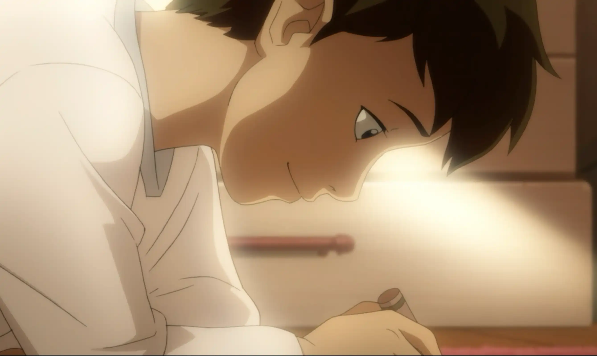
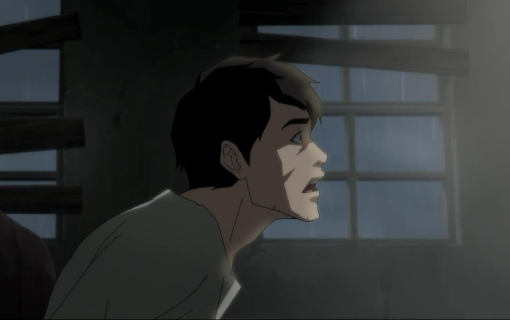
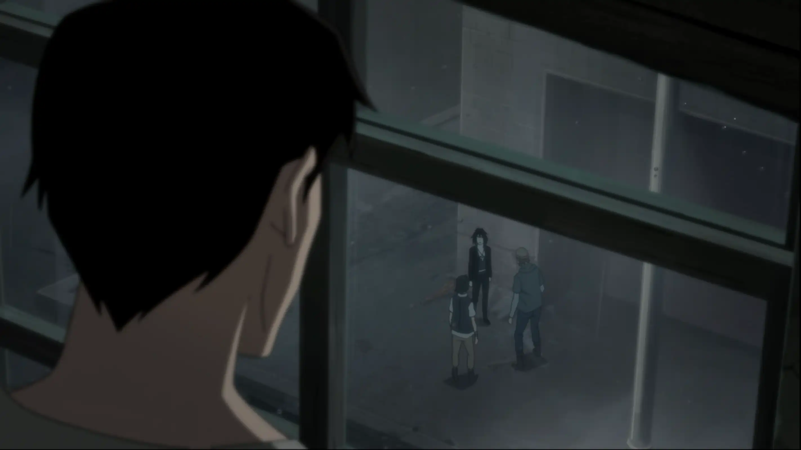
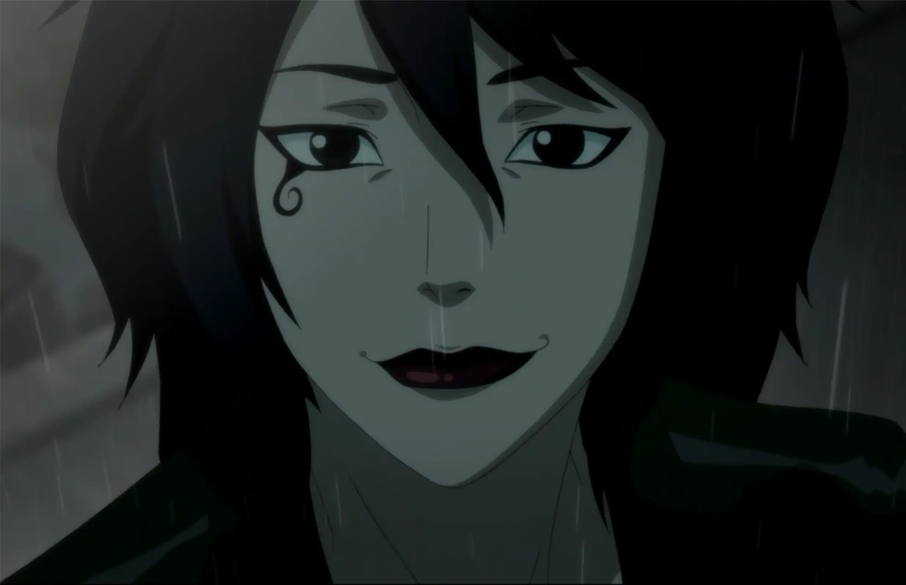
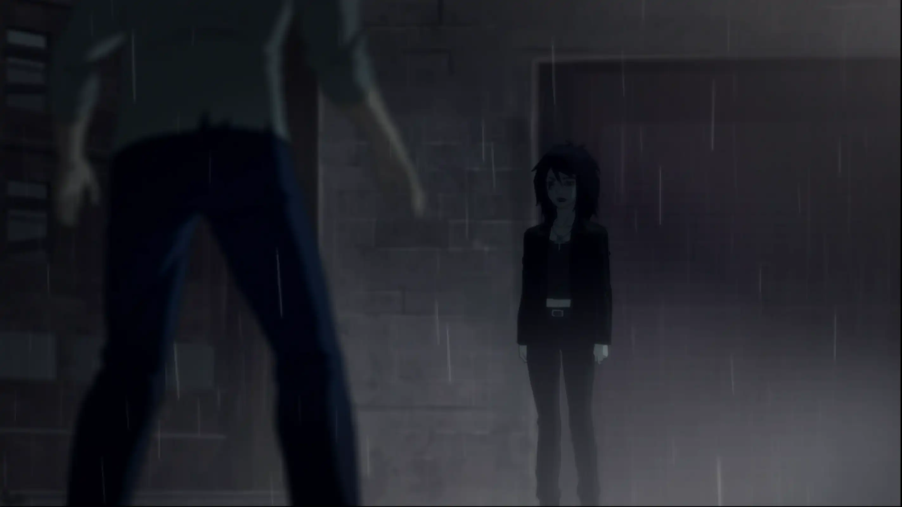
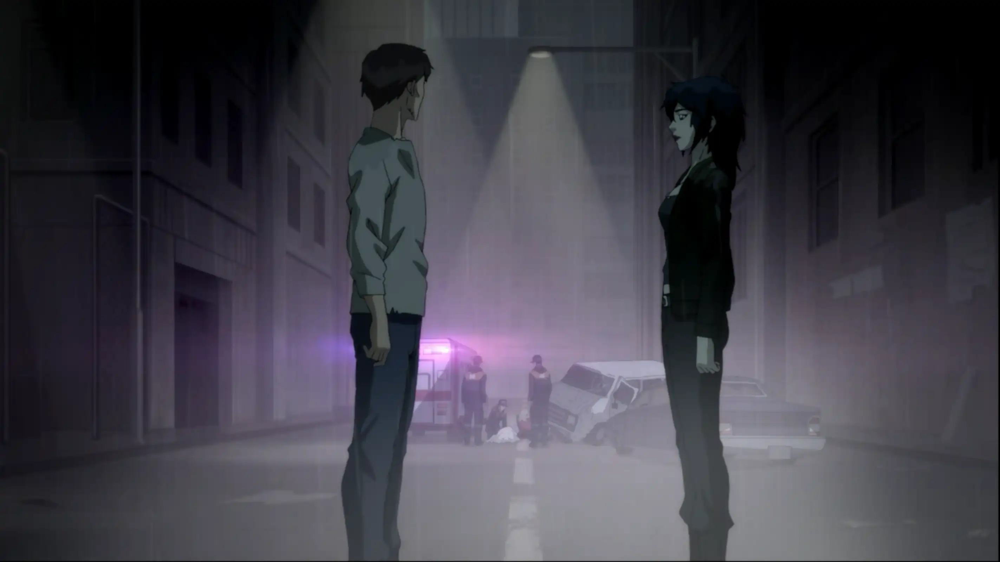
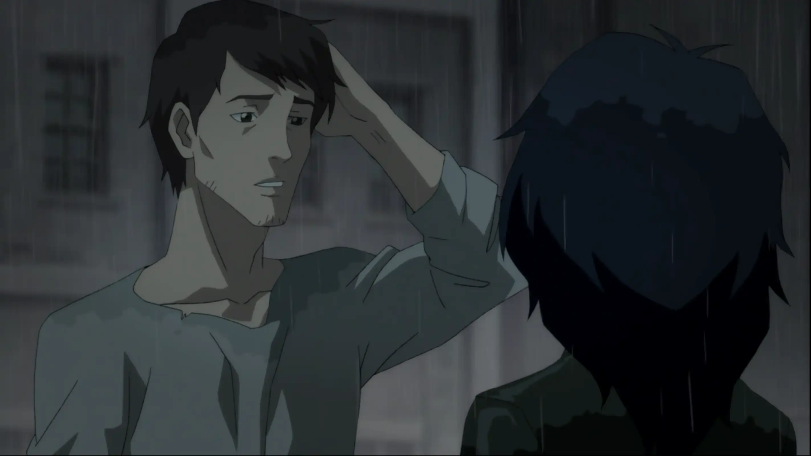
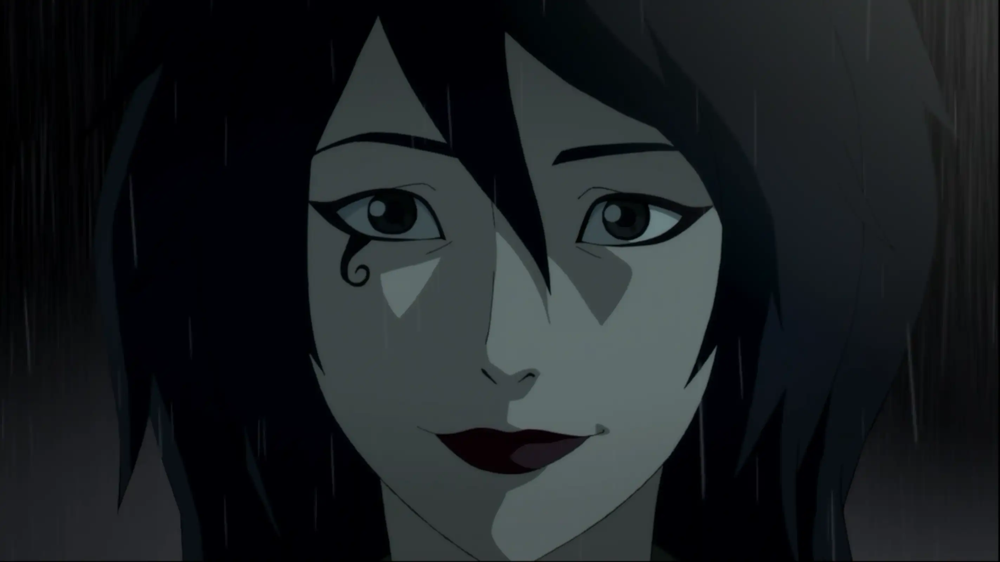
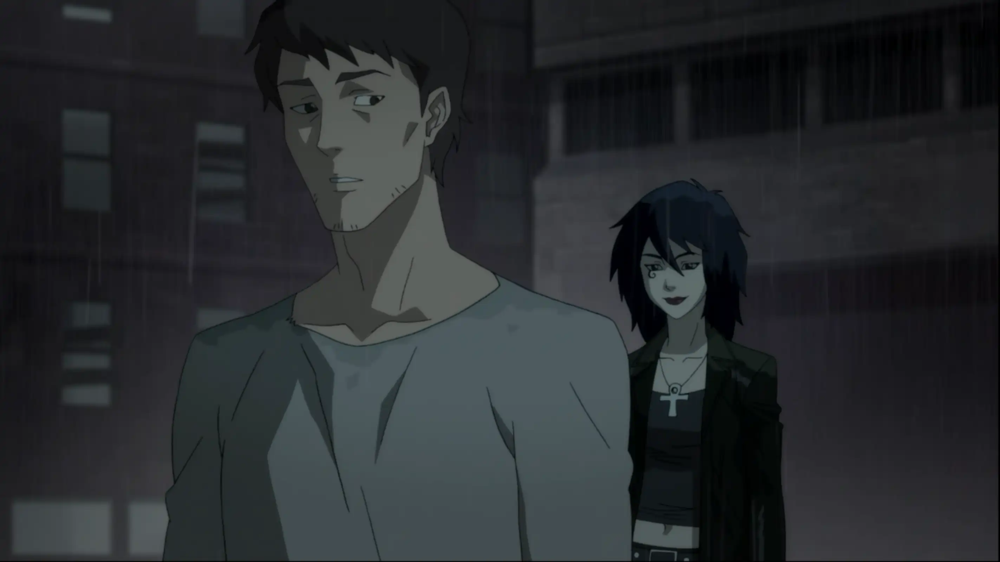
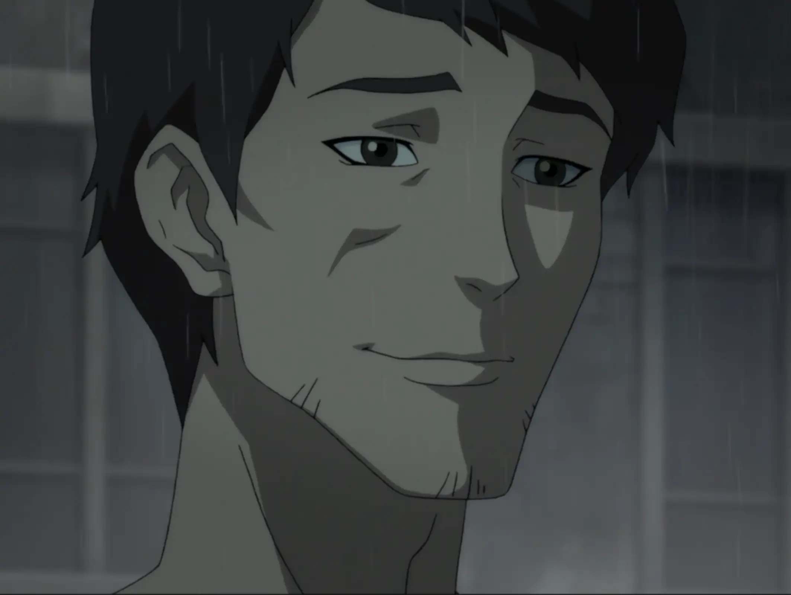

Luz en la Tormenta | Presagio
A veces, lo que vuelve… no es una coincidencia.
Después de perder la conciencia, vuelvo a verme de niño. Estoy en mi habitación, pintando en el piso. Es uno de los pocos recuerdos que aún se sienten limpios, como si nada pudiera dañarme ahí.
El recuerdo se rompe de golpe. Un ruido fuerte en la calle me despierta. Me incorporo rápido y miro hacia la ventana.
Desde arriba, entre la lluvia, distingo a la chica que conocí en el bar. No está sola. Dos personas discuten con ella, demasiado cerca, demasiado agresivas.
Una rabia que no esperaba me atraviesa. Abro la ventana y grito que ya llamé a la policía, aunque ni siquiera tengo teléfono. Solo quiero que se alejen de ella.

Ella levanta la mirada hacia mí… y sonríe. No sé por qué lo hace, pero esa expresión me detiene por un segundo.
Bajo las escaleras tan rápido como puedo y salgo a la calle, pero cuando llego, ya no están. Solo queda ella, empapada por la lluvia.
Camino hacia ella. Detrás se ve un accidente de autos, luces rotas y cuerpos inmóviles. La escena parece sacada de una pesadilla.
Ella me pregunta si de verdad llamé a la policía. Me da pena admitir que no tengo ni teléfono, pero lo hago. Aun así, me agradece.
Me pierdo otra vez en su rostro. No sé qué decirle, no sé si deba decir algo. Solo me despido y empiezo a regresar a mi habitación.
Antes de que me aleje, ella me detiene. Dice que me ha recordado… y me pregunta si le puedo mostrar mi trabajo.
No puedo evitarlo. Sonrío. De verdad sonrío.
